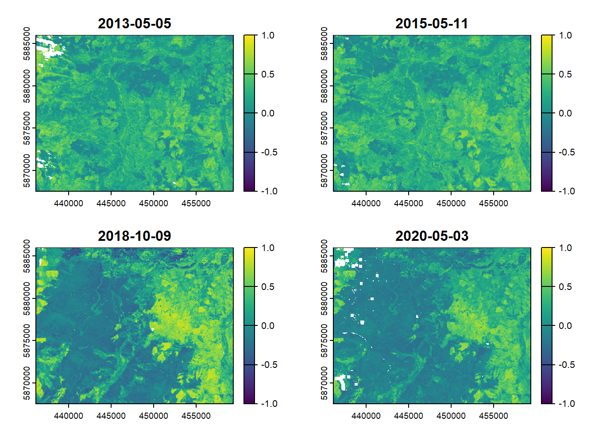
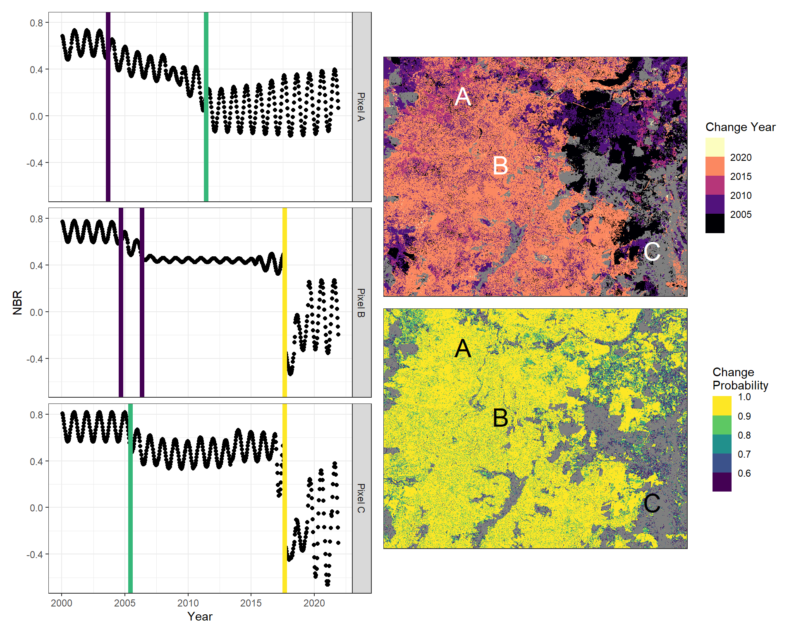

suppressPackageStartupMessages({
library(parallel); library(tidyverse); library(terra); library(Rbeast)
library(data.table); library(tidyterra); library(patchwork)
})
rm(list = ls())
# make an output folder if it does not exist already
if(!dir.exists("beast-outputs")){dir.create("beast-outputs")}
source("0_functions.r")Example of Continuous Change Detection using the BEAST algorithm
Change Detection for Continuous Forest Inventories
There are a variety of change detection algorithms for use on optical satellite imagery. Some (e.g., LandTrendr or Composite2Change) use a single pixel value for each year, and track those values through time. To attempt to detect changes in near-real time, another class of algorithms uses all available data throughout the year and looks for patterns in the cyclical trend of vegetation.
In a recent paper, the BEAST algorithm (Bayesian Estimator of Abrupt Change, Seasonality, and Trend) was found to do best in temperate North American forests featuring long data gaps due to persistent clouds and snow over winter.
In the example below, we use a time series of Normalized Burn Ratio (NBR) values as inputs to the BEAST algorithm in order to map changes across a study area in Central British Columbia, Canada.
First, let’s start by loading packages and setting up directories.
Next, let’s take a look at the available imagery. This is a series of NBR values for the study area, where the acquisition date is included in the file name. Images are aligned to one another and have already been masked to remove clouds and snow.
# what/where are the NBR layers?
fl = list.files("nbr-clips", pattern = ".tif$", full.names = T)
# let's look at a few of the NBR images to get a sense of what to expect in the results
example.dates = c("2013125", "2015131", "2018282", "2020124")
# here the date format is YYYYDDD, where YYYY is the year, and DDD is the julian date
str_subset(fl, paste0(example.dates, collapse = "|")) %>%
str_sort(numeric = T) %>%
rast() %>%
setNames(example.dates) %>%
plot(col = viridisLite::viridis(255), range = c(-1, 1))
In the above images, it looks like there was some disturbance between 2015 and 2018. In fact, there was a large wildfire here in 2017 - the Plateau Complex fire.
Now it’s time to set up the the BEAST algorithm. Here, we bring in our image stack (fl) and convert it to an array to run it through BEAST.
# run beast
# First, see if BEAST has already been run and if it's produced all expected output files
rds.out = paste0("beast-outputs/rds-beast-nbr.rds")
# make a raster stack of all files
indx.stk <- rast(fl)
# Turn the stack into an array for quicker calculation
indx.arr = as.array(indx.stk)
# leave this variable as a single image to save memory and so the results can be produced with the same geospatial metadata
indx.stk = indx.stk[[1]]
# see the size (rows x columns x layers)
dim(indx.arr) # If much more than 1200x1200, might want to clip it down a little bit[1] 613 776 261The image stack is 613 rows x 776 columns x 261 layers.
In other words, since each pixel is 30 x 30m (0.09 ha), the area is approximately 43,000 ha and we have a time series of 261 images.
BEAST algorithm
Now it’s time to run the BEAST algorithm. There are a lot of parameters for this algorithm, so some of them are stored in a separate file (0_functions.r) for convenience. We loaded these in the first block of code at the top of this page.
In this example, the algorithm was already run and the outputs are in the beast-outputs directory. BEAST took approximately 20 minutes to run this time series.
# run BEAST if the output file doesn't already exist
if(!file.exists(rds.out)){
# Make a vector of dates, then add it to the metadata for beast
# Here, the dates are stored in the file name
dates = str_sub(fl, start = -11, end = -5) %>% as.Date(format = "%Y%j")
metadata$time$year = as.numeric(str_sub(as.character(dates), end = 4))
metadata$time$doy = as.numeric(str_sub(fl, start = -7, end = -5))
metadata$isRegularOrdered = FALSE # The image stack is irregular
metadata$whichDimIsTime = 3 # The third dimension (image stack) represents time
metadata$deltaTime = 14/365 # Aggregate the irregular time series at a biweekly interval
metadata$period = 1.0 # The period is 1 year
metadata$maxMissingRate = 0.99
# if it's NBR, we also want to see the probability of change
extra$tallyPosNegTrendJump <- TRUE
extra$numParThreads = 0 # If 0, use all available cores. If >0, used to specify the total number of threads
# wrap it in a function that keeps all console outputs quiet
# we assigned the metadata above, but the prior and extra are in the "0_functions.r" file
capture.output({o = beast123(indx.arr, season = "harmonic",
metadata = metadata, extra = extra, prior = prior)}, file = nullfile())
# this is a large file, so make a smaller version to only keep what we need
o2 = list(o$time, o$trend$Y, o$season$Y,
o$trend$neg_cp, o$trend$neg_cpPr,
o$trend$neg_cpAbruptChange)
# assign it some more useful names
names(o2) = c("time", "trend", "season",
"chg.yr", "chg.prob", "chg.mag")
rm(o)
# write the file
write_rds(o2, rds.out)
}Now we need to output some rasters to describe the changes that BEAST just detected. Each pixel will have up to 10 detected “changes”, each with a set of descriptive characteristics: the timing, magnitude, and probability of change. Since there can be many detected changes per pixel, let’s make output rasters to look at two per pixel: the most recent change and the largest change (that with the highest probability).
In this example, the script is set to run in parallel, but this can be changed as needed.
if(!file.exists("beast-outputs/biggest_pr.tif")){
o2 = read_rds(rds.out)
# this raster needs to be the same dimensions as the beast output
dim.rast = paste0(dim(indx.stk)[1:2], collapse = "x")
dim.beast = paste0(dim(o2$chg.yr)[1:2], collapse = "x")
if(dim.rast != dim.beast){cat(" - Dimensions not equal; skipping"); return()}
# first, the most recent change
cl = makeCluster(detectCores() / 2)
clusterEvalQ(cl, {library(dplyr); library(data.table)})
dt.yr = parApply(cl = cl, o2$chg.yr, MARGIN = c(1, 2),
function(x){as.numeric(x) %>% t() %>% as.data.frame()}) %>%
rbindlist()
dt.prob = parApply(cl = cl, o2$chg.prob, MARGIN = c(1, 2),
function(x){as.numeric(x) %>% t() %>% as.data.frame()}) %>%
rbindlist()
dt.mag = parApply(cl = cl, o2$chg.mag, MARGIN = c(1, 2),
function(x){as.numeric(x) %>% t() %>% as.data.frame()}) %>%
rbindlist()
clusterExport(cl, c("dt.yr", "dt.prob", "dt.mag"))
recent.change = parLapply(cl = cl, 1:nrow(dt.yr), fun = function(i){
indx = which.max(dt.yr[i,]) %>% as.numeric()
if(length(indx) == 0){df.out = data.frame(recent.yr = NA, recent.pr = NA, recent.mg = NA)}
else(df.out = data.frame(recent.yr = as.numeric(dt.yr[i, ..indx]),
recent.pr = as.numeric(dt.prob[i, ..indx]),
recent.mg = as.numeric(dt.mag[i, ..indx])))
return(df.out)
}) %>%
rbindlist()
biggest.change = parLapply(cl = cl, 1:nrow(dt.yr), fun = function(i){
indx = which.max(dt.prob[i,]) %>% as.numeric()
# make all values NA if it has NA inputs
if(length(indx) == 0){df.out = data.frame(biggest.yr = NA, biggest.pr = NA, biggest.mg = NA)}
else(df.out = data.frame(biggest.yr = as.numeric(dt.yr[i, ..indx]),
biggest.pr = as.numeric(dt.prob[i, ..indx]),
biggest.mg = as.numeric(dt.mag[i, ..indx])))
return(df.out)
}) %>%
rbindlist()
stopCluster(cl)
# combine the outputs
out.dt = cbind(recent.change, biggest.change)
names(out.dt) <- str_replace(names(out.dt), "[.]", "_")
# output the rasters
for(cur.nm in names(out.dt)){
vals = pull(out.dt, cur.nm) %>%
matrix(nrow = nrow(o2$chg.yr), ncol = ncol(o2$chg.yr)) %>%
t() %>%
as.numeric()
rb = indx.stk
values(rb) = vals
writeRaster(rb, paste0("beast-outputs/", cur.nm, ".tif"), overwrite = T)
}
}Deriving and graphing outputs
Finally, let’s take a look at the outputs. Since BEAST detects lots of changes, we can filter out only those with a high probability, set by a threshold called min.chg.prob.
In this example, there are three images selected which show a range of disturbance histories. We’ll show the BEAST outputs for all three, including the smoothed trend and the mapped disturbance probabilities.
# clean up the environment
# terra::tmpFiles(remove = T); gc(verbose = F)
# let's only consider something is a "change" if the BEAST probability is over a certain threshold (here, 0.5)
min.chg.prob = 0.5
# We need to make a table to convert between XY points and Row/Col numbers, since the beast output is in an array
row.col.ids = as.data.frame(indx.stk, xy = T, na.rm = F) %>%
as.data.table() %>%
select(x, y) %>%
mutate(row.id = rep(1:nrow(indx.stk), each = ncol(indx.stk)),
col.id = rep(1:ncol(indx.stk), times = nrow(indx.stk)))
# make a raster where pixel values are the row and column IDs from the above table
row.col.rast = rast(as.data.frame(row.col.ids), type = "xyz", crs = crs(indx.stk))
# There are three example pixels to look at
a.xy = c(442216, 5882983)
b.xy = c(445096, 5877673)
c.xy = c(456700, 5871102)
# What are the Row/Column numbers for each example pixel?
a.rc = extract(row.col.rast, a.xy) %>% na.omit() %>% mutate(name = "Pixel A")
b.rc = extract(row.col.rast, b.xy) %>% na.omit() %>% mutate(name = "Pixel B")
c.rc = extract(row.col.rast, c.xy) %>% na.omit() %>% mutate(name = "Pixel C")
# in this case, the output has already been run and saved to the path below
if(!file.exists("beast-outputs/beast_changes.csv")){
# read in the BEAST output
o2 = read_rds(rds.out)
# get the smoothed NBR values ("Y") from the BEAST output
gg.dt = bind_rows(a.rc, b.rc, c.rc) %>%
apply(MARGIN = 1, FUN = function(x){
rw = x[1] %>% as.numeric()
cl = x[2] %>% as.numeric()
nm = x[3] %>% as.character()
dt.out = data.table(name = nm,
time = o2$time,
trend = o2$trend[rw, cl,],
season = o2$season[rw, cl,])
return(dt.out)
}) %>%
bind_rows() %>%
mutate(Y = trend + season)
# This data.table shows the times and probability of change detected by BEAST
chg.dt = bind_rows(a.rc, b.rc, c.rc) %>%
apply(MARGIN = 1, FUN = function(x){
rw = x[1] %>% as.numeric()
cl = x[2] %>% as.numeric()
nm = x[3] %>% as.character()
change.dt = data.table(name = nm,
chg.prob = o2$chg.prob[rw, cl,],
chg.yr = o2$chg.yr[rw, cl,],
chg.mag = o2$chg.mag[rw, cl,])
return(change.dt)
}) %>%
bind_rows() %>%
filter(chg.prob >= min.chg.prob) # filter out those below our threshold
# write both of these data tables
fwrite(chg.dt, "beast-outputs/beast_changes.csv")
fwrite(gg.dt, "beast-outputs/beast_trend.csv")
}
chg.dt = fread("beast-outputs/beast_changes.csv")
gg.dt = fread("beast-outputs/beast_trend.csv")
# These are the raster layers output from BEAST in a previous step
big.pr = rast("beast-outputs/biggest_pr.tif")
big.pr[big.pr <= min.chg.prob] <- NA # filter out those below our threshold
big.yr = rast("beast-outputs/biggest_yr.tif") %>%
mask(big.pr) # filter out pixels below our threshold
# for the figure legend, we need the range of years with detected disturbance
yr.range = global(big.yr, c("min", "max"), na.rm = T) %>%
as.numeric()
# to display the example pixels, convert them into vectors
xy.vect = rbind(a.xy, b.xy, c.xy) %>%
as.data.table() %>%
mutate(., nm = LETTERS[1:nrow(.)]) %>%
rename("X" = "V1", "Y" = "V2") %>%
vect(geom = c("X", "Y"), crs = crs(indx.stk))
# For each example pixel, show the smoothed NBR trend including any detected changes
nbr.plot = ggplot(gg.dt, aes(y = Y, x = time)) +
geom_point() +
geom_vline(data = chg.dt, aes(xintercept = chg.yr, color = chg.prob), linewidth = 2) +
facet_wrap("name", ncol = 1, strip.position = "right") +
scale_color_viridis_b(breaks = seq(min.chg.prob, 1, by = .1)) +
labs(x = "Year", y = "NBR", color = "Change probability") +
theme_bw() +
theme(legend.position = "none")
# show the BEAST output raster with the year of change
yr.plot = ggplot() +
geom_spatraster(data = big.yr) +
geom_spatvector_text(data = xy.vect, aes(label = nm), color = "white", size = 8) +
coord_sf(expand = F, label_axes = "----") +
theme_bw() +
scale_fill_viridis_b(option = "magma", breaks = seq(floor(yr.range[1]), ceiling(yr.range[2]), by = 5)) +
labs(x = NULL, y = NULL, fill = "Change Year")
# show the BEAST output raster with the probability of change
pr.plot = ggplot() +
geom_spatraster(data = big.pr) +
geom_spatvector_text(data = xy.vect, aes(label = nm), color = "black", size = 8) +
coord_sf(expand = F, label_axes = "----") +
theme_bw() +
scale_fill_viridis_b(breaks = seq(min.chg.prob, 1, by = .1)) +
labs(x = NULL, y = NULL, fill = "Change\nProbability")
# plot the output using the patchwork package
nbr.plot + (yr.plot / pr.plot)